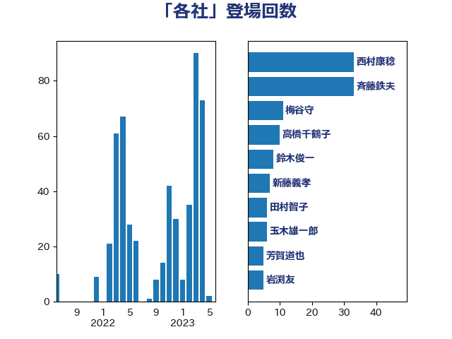

単語「各社」

| 赤羽一嘉 | 公明党 | 23 回 |
| 小沢雅仁 | 立憲民主党 | 15 回 |
| 上川陽子 | 自由民主党 | 8 回 |
| 新藤義孝 | 自由民主党 | 8 回 |
| 玉木雄一郎 | 国民民主党 | 8 回 |
| 鈴木俊一 | 自由民主党 | 8 回 |
| 斉藤鉄夫 | 公明党 | 7 回 |
| 梶山弘志 | 自由民主党 | 6 回 |
| 城井崇 | 立憲民主党 | 4 回 |
| 山添拓 | 日本共産党 | 4 回 |
| 後藤茂之 | 自由民主党 | 4 回 |
| 武田良太 | 自由民主党 | 4 回 |
| 萩生田光一 | 自由民主党 | 4 回 |
| 金子恭之 | 自由民主党 | 4 回 |
| 高橋千鶴子 | 日本共産党 | 4 回 |
| 今枝宗一郎 | 自由民主党 | 3 回 |
| 大岡敏孝 | 自由民主党 | 3 回 |
| 大野泰正 | 自由民主党 | 3 回 |
| 小西洋之 | 立憲民主党 | 3 回 |
| 岩本剛人 | 自由民主党 | 3 回 |
| 石川大我 | 立憲民主党 | 3 回 |
| 芳賀道也 | 国民民主党 | 3 回 |
| 足立康史 | 日本維新の会 | 3 回 |
| 野田国義 | 立憲民主党 | 3 回 |
| 音喜多駿 | 日本維新の会 | 3 回 |
| おおつき紅葉 | 立憲民主党 | 2 回 |
| こやり隆史 | 自由民主党 | 2 回 |
| ながえ孝子 | 無所属 | 2 回 |
| 中谷一馬 | 立憲民主党 | 2 回 |
| 伊藤岳 | 日本共産党 | 2 回 |
| 國重徹 | 公明党 | 2 回 |
| 堀井学 | 自由民主党 | 2 回 |
| 室井邦彦 | 日本維新の会 | 2 回 |
| 山田太郎 | 自由民主党 | 2 回 |
| 川合孝典 | 国民民主党 | 2 回 |
| 平井卓也 | 自由民主党 | 2 回 |
| 平山佐知子 | 無所属 | 2 回 |
| 江田憲司 | 立憲民主党 | 2 回 |
| 河野義博 | 公明党 | 2 回 |
| 田村智子 | 日本共産党 | 2 回 |
| 石井準一 | 自由民主党 | 2 回 |
| 篠原豪 | 立憲民主党 | 2 回 |
| 細田健一 | 自由民主党 | 2 回 |
| 若松謙維 | 公明党 | 2 回 |
| 菅義偉 | 自由民主党 | 2 回 |
| 藤川政人 | 自由民主党 | 2 回 |
| 藤田文武 | 日本維新の会 | 2 回 |
| 阿達雅志 | 自由民主党 | 2 回 |
| 阿部弘樹 | 日本維新の会 | 2 回 |
| 下野六太 | 公明党 | 1 回 |
| 串田誠一 | 日本維新の会 | 1 回 |
| 井原巧 | 自由民主党 | 1 回 |
| 伊藤孝恵 | 国民民主党 | 1 回 |
| 倉林明子 | 日本共産党 | 1 回 |
| 加藤鮎子 | 自由民主党 | 1 回 |
| 勝部賢志 | 立憲民主党 | 1 回 |
| 古屋範子 | 公明党 | 1 回 |
| 古賀之士 | 立憲民主党 | 1 回 |
| 吉川元 | 立憲民主党 | 1 回 |
| 大島敦 | 立憲民主党 | 1 回 |
| 大西英男 | 自由民主党 | 1 回 |
| 太栄志 | 立憲民主党 | 1 回 |
| 奥野総一郎 | 立憲民主党 | 1 回 |
| 守島正 | 日本維新の会 | 1 回 |
| 宮本岳志 | 日本共産党 | 1 回 |
| 小宮山泰子 | 立憲民主党 | 1 回 |
| 小泉進次郎 | 自由民主党 | 1 回 |
| 山下芳生 | 日本共産党 | 1 回 |
| 岡本三成 | 公明党 | 1 回 |
| 川田龍平 | 立憲民主党 | 1 回 |
| 有村治子 | 自由民主党 | 1 回 |
| 本田顕子 | 自由民主党 | 1 回 |
| 杉久武 | 公明党 | 1 回 |
| 東徹 | 日本維新の会 | 1 回 |
| 林芳正 | 自由民主党 | 1 回 |
| 枝野幸男 | 立憲民主党 | 1 回 |
| 柳ヶ瀬裕文 | 日本維新の会 | 1 回 |
| 梅村みずほ | 日本維新の会 | 1 回 |
| 森屋隆 | 立憲民主党 | 1 回 |
| 森山浩行 | 立憲民主党 | 1 回 |
| 森本真治 | 立憲民主党 | 1 回 |
| 榛葉賀津也 | 国民民主党 | 1 回 |
| 横沢高徳 | 立憲民主党 | 1 回 |
| 江島潔 | 自由民主党 | 1 回 |
| 池下卓 | 日本維新の会 | 1 回 |
| 沢田良 | 日本維新の会 | 1 回 |
| 河西宏一 | 公明党 | 1 回 |
| 浜口誠 | 国民民主党 | 1 回 |
| 浜田聡 | NHK党 | 1 回 |
| 清水真人 | 自由民主党 | 1 回 |
| 片山さつき | 自由民主党 | 1 回 |
| 牧山ひろえ | 立憲民主党 | 1 回 |
| 田中健 | 国民民主党 | 1 回 |
| 田島麻衣子 | 立憲民主党 | 1 回 |
| 田村まみ | 国民民主党 | 1 回 |
| 田村憲久 | 自由民主党 | 1 回 |
| 石井正弘 | 自由民主党 | 1 回 |
| 石井浩郎 | 自由民主党 | 1 回 |
| 礒崎哲史 | 国民民主党 | 1 回 |
| 福山哲郎 | 立憲民主党 | 1 回 |
| 福島みずほ | 社会民主党 | 1 回 |
| 稲富修二 | 立憲民主党 | 1 回 |
| 稲津久 | 公明党 | 1 回 |
| 竹内真二 | 公明党 | 1 回 |
| 竹谷とし子 | 公明党 | 1 回 |
| 笠井亮 | 日本共産党 | 1 回 |
| 舩後靖彦 | れいわ新選組 | 1 回 |
| 西村康稔 | 自由民主党 | 1 回 |
| 西村智奈美 | 立憲民主党 | 1 回 |
| 足立敏之 | 自由民主党 | 1 回 |
| 輿水恵一 | 公明党 | 1 回 |
| 逢坂誠二 | 立憲民主党 | 1 回 |
| 遠藤良太 | 日本維新の会 | 1 回 |
| 野上浩太郎 | 自由民主党 | 1 回 |
| 鈴木敦 | 国民民主党 | 1 回 |
| 長浜博行 | 無所属 | 1 回 |
| 青木愛 | 立憲民主党 | 1 回 |
| 高野光二郎 | 自由民主党 | 1 回 |
| 鳩山二郎 | 自由民主党 | 1 回 |
| 麻生太郎 | 自由民主党 | 1 回 |
| 黄川田仁志 | 自由民主党 | 1 回 |